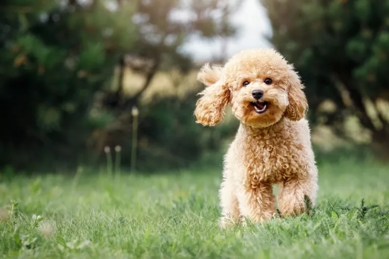
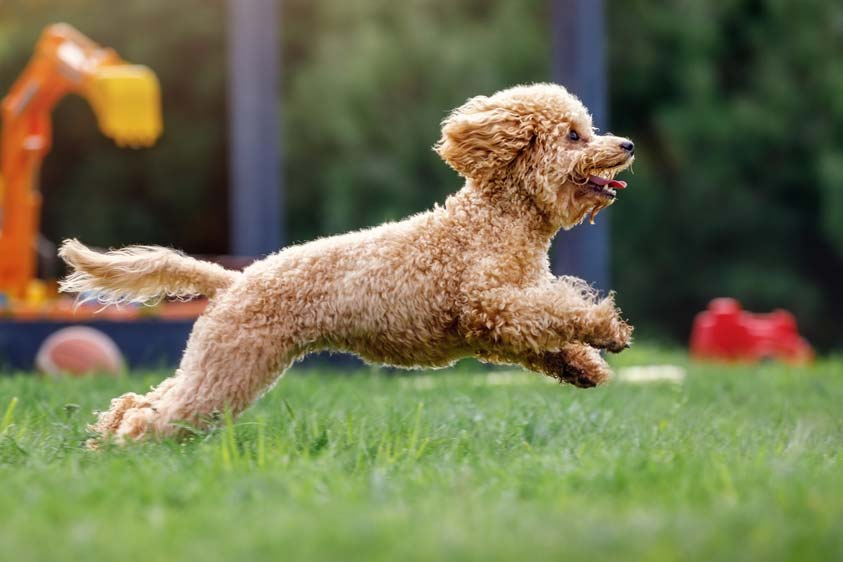
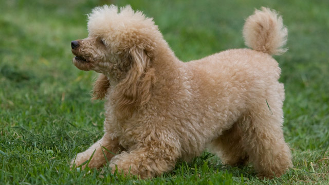

Caniche
INTRODUCCIÓN
El caniche es una raza canina que hasta el siglo XV se consideró de uso exclusivo de los aristócratas y nobles.
Fue un perro cobrador de aguas hasta el Renacimiento: recuperaban las presas ya cazadas que habían caído al agua, como patos y cisnes.
A continuación, veremos las principales características de este animal:
CARACTERÍSTICAS FÍSICAS
El caniche es un perro elegante y bien proporcionado, con un cuerpo armonioso y musculoso. Existen tres tamaños: estándar, mediano y toy, pero todos mantienen la misma estructura física. Su cabeza es alargada, con un hocico fino y orejas caídas. Sus ojos son oscuros y expresivos, reflejando su inteligencia y vivacidad.
Su pelaje es rizado y denso, de textura lanosa, lo que le da una apariencia distintiva. Puede presentarse en diversos colores como blanco, negro, marrón, gris o albaricoque. Su andar es ágil y ligero, mostrando una postura elegante. Es un perro resistente y muy activo.

TEMPERAMENTO
El caniche es un perro inteligente, activo y amigable, conocido por su gran capacidad de aprendizaje y obediencia. Es una raza muy sociable, leal y cariñosa con su familia, aunque puede mostrarse reservado con extraños al principio. Su inteligencia lo hace fácil de entrenar, destacando en obediencia y trucos. Es un perro juguetón, lleno de energía y disfruta de la compañía humana.
Además, suele llevarse bien con niños y otras mascotas. Es sensible al estado de ánimo de sus dueños y necesita estimulación mental y física para mantenerse equilibrado. Su temperamento lo convierte en un excelente compañero familiar.

SALUD
Los caniches son una raza generalmente saludable, con una esperanza de vida de 12 a 15 años, pero pueden ser propensos a ciertas enfermedades hereditarias.
Uno de los problemas más comunes es la displasia de cadera, especialmente en caniches grandes, así como la luxación de rótula en los más pequeños. También pueden desarrollar atrofia progresiva de retina (APR), una enfermedad ocular que puede llevar a la ceguera.
Otros problemas frecuentes incluyen la enfermedad de Addison, que afecta las glándulas suprarrenales, y la epilepsia, que puede causar convulsiones. Además, algunos caniches presentan alergias cutáneas y problemas dentales, por lo que es importante una buena higiene bucal.
Para mantener su salud, es esencial llevarlos al veterinario regularmente, proporcionarles una dieta equilibrada, ejercicio diario y cuidar su pelaje con cepillados y baños regulares. Con los cuidados adecuados, los caniches pueden vivir una vida larga y saludable.

Regresar a pantalla principal